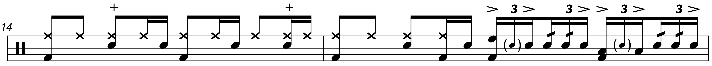
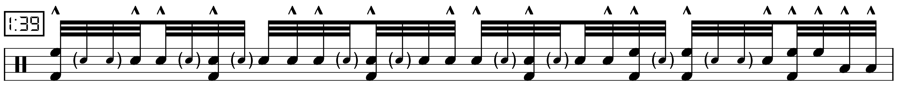
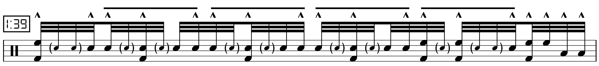

Transcription: “Hey Joe” — Mitch Mitchell with Jimi Hendrix
Posted on March 7, 2021

Yeah, I should probably know better than to talk about “Hey Joe” in the 21st century. But there’s no denying that it’s an incredible song, despite the rather… disturbing lyrics.
There’s actually some interesting speculation online as to why Jimi decided to make his debut single a cover song about a man who murders his wife and tries to hightail it to Mexico. Discussions usually reference Jimi’s turbulent military service (e.g. being conscripted into the Army and basically kicked out of it) as possibly drawing him to a song about violence, betrayal, and freedom. I’ve even found comments about how the background vocals are meant to represent the ghost of Joe’s wife, haunting over him as he tries to cheat the gallows.
Is any of that actually true? Who can say… I think the thoughts regarding the background singers are a bit fanciful. I’m not even sure whose idea that was, e.g. if it was Jimi or producer Chas Chandler. It may have had less to do with making a musical statment and more to do with filling the vocals out, since it’s well known that, at this point in his career, Jimi was very insecure about his voice.
There are still so many interesting parts to the song: a progression that basically uses the circle of fifths to move up from C to E; the backing vocals that slowly introduce harmonies until all 4 parts are added; the walking chromatic riff that first happens right after the solo; and of course Mitch’s drumming, which carries the song through a series of increasingly intense climaxes.
If you caught my “Little Wing” post, you should recognize many of Mitch’s moves here, namely a swung 16th note groove with straight 32nd notes fills. There’s also the gag with Mitch closing the hats on backbeats during the first verse, as well as crashes with the ride. But the fills really are the star of the show, as they demonstrate an incredible amount of musicianship and restraint. Mitch starts simple, ending every four bar phrase with licks that continue to grow in intensity.
One of the early fills comes from a pretty straightforward jazz fill — notice the accent pattern, as well as the six stroke roll that’s snuck in there (an actual six stroke roll to boot):
There’s a 32nd note fill at measure 31 that’s built with paradiddles. And then there’s the big fill right before the guitar solo, which has become one of the most famous drum fills in classic rock:
Do you recognize the accent pattern? It’s lifted right from the triplet fill we heard earlier. Check out the six note phrases:
A variation of this fill is heard in measure 46 (around the 2:12 mark) which features some orchestrations around the toms.
Some of the other highlights include some rather gnarly swing figures with the ride; Mitch really shows off his jazz background with these moves. I’m a big fan of this line:

Sorry about the quadruplet. I know I really shouldn’t, but it’s such a convenient way to write only a few notes as straight.
Also notice how Mitch uses the kick in most of his fills. The kick is a bit burried in the mix, the way kick drums on older songs tend to be. There’s a service that was launched recently called Moises that uses some sort of AI/machine learning to isolate the instruments in a song. It’s gotten a lot of buzz lately because it actually works. Kind of. I tried it out on “Hey Joe”, and while the “isolated” drums are a little garbled, the kick comes through pretty clearly, and it was a good way to check some of my work.
As always, Mitch’s kit is a mystery. I found an article from Drum! Magazine where Mitch talks about using a “tiny Ludwig kit” for the early Experience rehearsals. Since “Hey Joe” was the first song the band ever recorded, I’m guessing Mitch played the tune on this four piece set, with a rack tom and a floor tom. That’s all I can really hear on the recording anyway.
This was actually one of my earlier projects; I did most of it my freshman year of college. I was pretty intimidated by these swing figures at first, and at the time I wasn’t sure if I would be able to pull it off. But nowadays? No big deal man.
“Hey Joe” on Songwhip.
With my band’s EP coming out soon, I’ve begun looking at websites that will consolidate music streaming links. I found one called Songwhip that I think I will now use to share the songs I discuss on my site, since I’ve been too lazy to include anything other than Spotify and Apple Music. I sure hope this website doesn’t shut down in a year or two, because that would really bum me out.
Tags: 2021 • Transcription • Mitch Mitchell • Jimi Hendrix